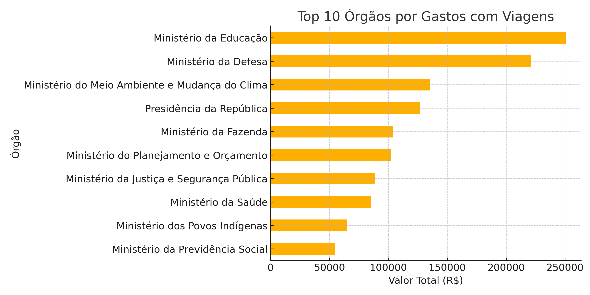
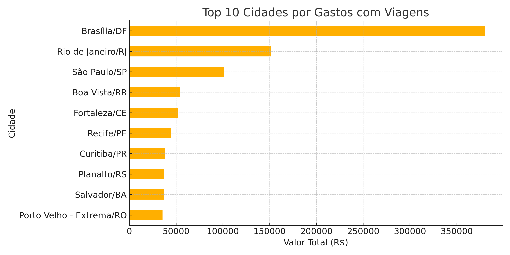

Análise de Gastos com Viagens Públicas
Este projeto apresenta uma análise exploratória de dados públicos relacionados aos gastos com viagens realizadas por órgãos do governo federal. Os gráficos abaixo mostram os principais resultados.
🧳 Análise de Diárias e Passagens
Este projeto realiza uma análise exploratória de dados públicos relacionados a diárias e passagens, com foco em identificar padrões de gastos, destinos mais frequentes, evolução temporal e outros insights.
📊 Objetivos
- Identificar servidores e órgãos que mais gastam
- Mapear os destinos mais comuns
- Avaliar a evolução dos gastos ao longo do tempo
- Observar duração média das viagens
- Gerar visualizações de fácil entendimento
⚠️ Limitação dos Dados
Os dados analisados cobrem um período limitado. Por isso, as análises se concentram em métricas de distribuição (ranking, médias e somatórios) em vez de tendências de longo prazo. Mesmo com essa limitação, o projeto demonstra domínio das etapas de análise de dados com base em dados reais.
📁 Estrutura
viagens.csv: Base de dados originalanalise_viagens.ipynb: Código com análises e gráficosrequirements.txt: Bibliotecas necessáriasREADME.md: Documentação do projeto
🚀 Como Rodar
- Clone o repositório
- Instale as dependências:
pip install -r requirements.txt
- Abra o notebook com Jupyter:
jupyter notebook analise_viagens.ipynb
💻 Como executar localmente
git clone https://github.com/seu-usuario/analise-gastos-viagens-publicas.git
cd analise-gastos-viagens-publicas
python -m venv .venv
source .venv/bin/activate # Linux/macOS
.venv\Scripts\activate # Windows
pip install -r requirements.txt
Execute o notebook: abra o arquivo notebooks/analise_viagens.ipynb em um Jupyter Notebook para explorar a análise.
Top 10 Órgãos por Gastos

Top 10 Cidades por Gastos

Para mais detalhes, acesse o repositório no GitHub.
Public Travel Expenses Analysis
This project presents an exploratory data analysis of public expenses related to travel by federal government agencies in Brazil. The charts below highlight the main findings.
Top 10 Agencies by Expenses
Top 10 Cities by Expenses
For more details, visit the GitHub repository.